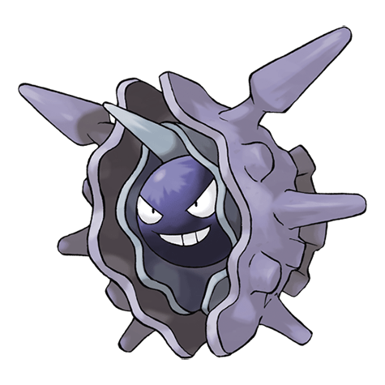

Назад
Клойстер

Клойстер — Покемон 1 поколения под номером 91 в Покедекс. Обитает он в регионе Канто и относится к Водяному и Ледяному типу. Это последняя стадия эволюции Покемона Шеллдера. Клойстер может плавать в море, заглатывая воду и резко выбрасывая её назад. Этот Покемон использует тот же способ, чтобы выстреливать шипами из своего панциря.
Тип:
Водяной
Ледяной
Эволюция
# 091 Клойстер
Финальная стадия